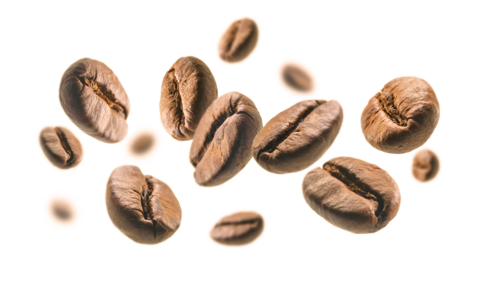

Café
Les bienfaits du café :
- Améliore la Vigilance et la Concentration : La caféine présente dans le café
stimule le système nerveux central, augmentant ainsi la vigilance et la concentration.
- Riche en Antioxydants : Le café est une source importante d'antioxydants, qui
aident à lutter contre les dommages causés par les radicaux libres.
- Peut Réduire le Risque de Certaines Maladies : La consommation régulière de
café est associée à une réduction du risque de maladies comme la maladie de Parkinson, la
maladie d'Alzheimer et certains types de cancer.
- Favorise la Performance Physique : La caféine peut améliorer la performance
physique en augmentant les niveaux d'adrénaline et en libérant des acides gras des tissus
adipeux.